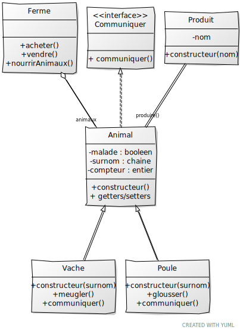

Voici votre examen de C++ ZZ2. Lisez tout le sujet avant de commencer : un certain nombre de tests ont été écrits pour être indépendants ou avec peu d'influence sur les autres.
À la fin de l'examen, vous devez laisser un programme qui compile.
Pour plus de simplicité, vous DEVEZ utiliser trois fichiers en plus de main.cpp : tests.cpp, ferme.hpp et ferme.cpp. Ne changez pas la casse et n'ajoutez pas de fichiers, cela casserait la chaine de compilation et engendrerait une note nulle.
Toutes les déclarations seront dans l'entête, les définitions/implémentations seront dans le cpp.
La ligne de compilation est la suivante :
make
Si besoin, vous pouvez faire un make clean. La première compilation de la bibliothèque Catch est un peu longue, comme d'habitude
Ne jamais recommenter un test qui a réussi. Tous les tests décommentés doivent compiler dans le même temps (sauf mention contraire).
Pour garder une trace exécutable de votre programme sans stress supplémentaire :
Vous allez plus ou moins implémenter le diagramme UML ci-dessous. Toute ressemblance avec un autre examen serait purement fortuite.
Produit qui permet de représenter une produit avec un nom [Produit1]PeutPasProduireException. Si vous ne savez pas, c'est pas grave ! [Exception1]Pour les tests suivants, il y a une relation entre Vache et Animal que les tests n'exploitent pas.
Vache qui possede un surnom et qui produit du lait [Vache1]Pour les tests suivants, on utilise la relation d'héritage entre la classe Poule et Animal. Vous devez donc construire les classes en même temps.
Poule qui possede un surnom et qui produit un oeuf [Poule1]compteur à la classe Animal. Ce compteur est incrémenté à chaque nouvelle instance [Animal1, Animal2] Communiquer. Tous les animaux communiquent et on associe dans chaque classe le mode de communication [Communiquer1, Communiquer2]Communiquer et Animal ne sont pas instanciablesOn va maintenant passer à la classe Ferme. La manière de stocker les animaux n'est pas importante mais vous devez pouvoir ajouter et enlever des animaux, les rechercher par leur nom, voire les trier
Pour la dernière question, vous avez plein de manière de faire, mais on peut reconnaître un animal à sa manière de communiquer.
Il n'y a pas de fuite mémoire à votre programme !
Préparation du compte (1 fois, au début) :
git config --global user.name "un_nom"
git config --global user.email "un_mail"
Préparation du répertoire :
git init
À chaque nouveau fichier:
git add fichier
git add *
Sauvegarder / Committer :
git commit -am "commentaire"
git log permet d'avoir la liste des sauvegardes avec un numéro de hachage
Pour revenir en arrière :
git checkout numero_de_hash
OU git revert numero_de_hash